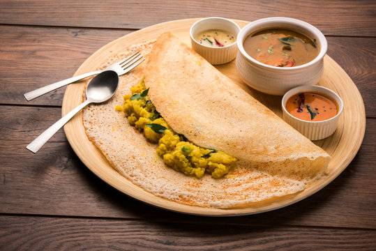

Dosas made at home will seldom be as big or thin as restaurant dosas, but the smaller, pancake-size dosas are just as good, maybe even better
Combine rice, urad dal, and fenugreek seeds in a large bowl. Add cold water to cover, and stir for 10 to 15 seconds; drain. Repeat rinsing process twice until water is mostly clear. Return rice mixture to bowl, and cover with about 4 inches of cold water. Set aside, uncovered, in a warm environment (75°F to 80°F) until rice and lentils double in size, 6 to 8 hours, stirring once after 1 hour.
Pour rice mixture through a fine wire-mesh strainer set over a large bowl; reserve soaking liquid. Working in 3 batches, transfer about one-third of rice mixture (about 2 1/2 cups) to a high-speed blender; add 1 teaspoon salt and 1/2 cup reserved soaking liquid. Blend on low speed, gradually increasing speed to high, until a smooth, thick batter forms, 1 to 2 minutes, adding 1 to 2 tablespoons additional soaking liquid if needed. (Batter will feel slightly gritty to the touch.) Pour batter into a large (3- to 4-quart) container. Repeat process 2 times using remaining rice mixture, remaining salt, and 1 cup reserved soaking liquid, plus more as needed. (If using a blender that is not high-speed, work in 6 batches, using 1 1/4 cups rice mixture, 1/2 teaspoon salt, and 1/4 cup reserved soaking liquid for each batch.)
Whisk 1/4 cup reserved soaking liquid into batter; discard remaining soaking liquid. (Batter should resemble thick pancake batter and should fall off whisk in a thick ribbon, leaving a trail on top of batter for about 10 seconds before sinking back into batter.) Cover container; let stand in a warm environment (75°F to 80°F) until slightly puffed, bubbles have formed all over, and batter has a sour smell, about 12 hours.
Thin batter with 3/4 to 1 cup water, 1/4 cup at a time, until consistency resembles a slightly thickened crêpe batter and batter falls off ladle in a thick ribbon, leaving a 1-second trail on batter surface.
Heat a 10-inch cast-iron skillet over medium-high. Brush hot skillet lightly with melted coconut oil, wiping with a paper towel to remove excess oil. Ladle 1/4 cup batter in center of skillet. Using bottom of ladle, quickly spread batter outward in a spiral motion, applying even, constant pressure to form a thin 6- to 8-inch round. (Stop spreading once ladle begins to stick to pan.)
Drizzle about 1/2 teaspoon oil around edge and on top of dosa; cook until bottom browns, edge crisps, and top is set, about 2 minutes. If desired, flip dosa, and cook until second side is very lightly browned, 10 to 15 seconds. Loosen dosa edge using a thin spatula. Add about 3 tablespoons Aloo Masala to half of dosa; fold dosa over filling, and serve immediately. Repeat as desired to make more dosas. Leftover batter can be refrigerated, covered, up to 2 weeks.